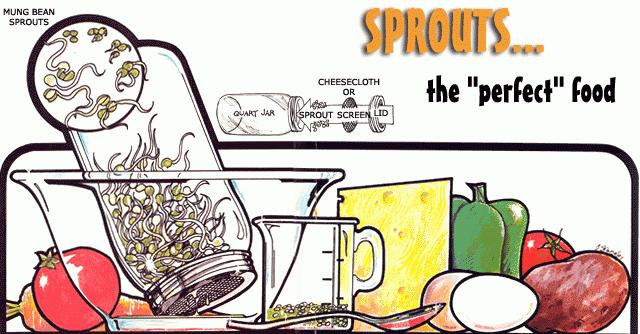

Ordinary seeds, grains and legumes (packed full of natural fats and starches) are quite wholesome...but sprouted seeds, grains and legumes (bursting with vitamins, simple sugars and proteins) are even more nutritious. Start a garden in your kitchen cabinet by [1] soaking clean, whole untreated seeds overnight in three times their volume of water, [2] placing the swelled beans, oats, alfalfa or whatever in a canning jar with a cheesecloth or screen wire cover, [3] tipping the container up at 45? angle in a bowl, [4] setting the bowl in a warm (room temperature to 90?F), dark place and [5] flushing the developing sprouts with clean water every four or six hours (twice a day?morning and evening?will usually work almost as well). In three to six days the shoots can be added to salads, sprinkled on soups, blended into health drinks, baked into bread, used as meatloaf filler, enjoyed in stew or eaten a hundred other ways.